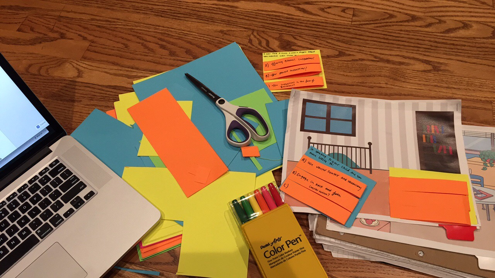
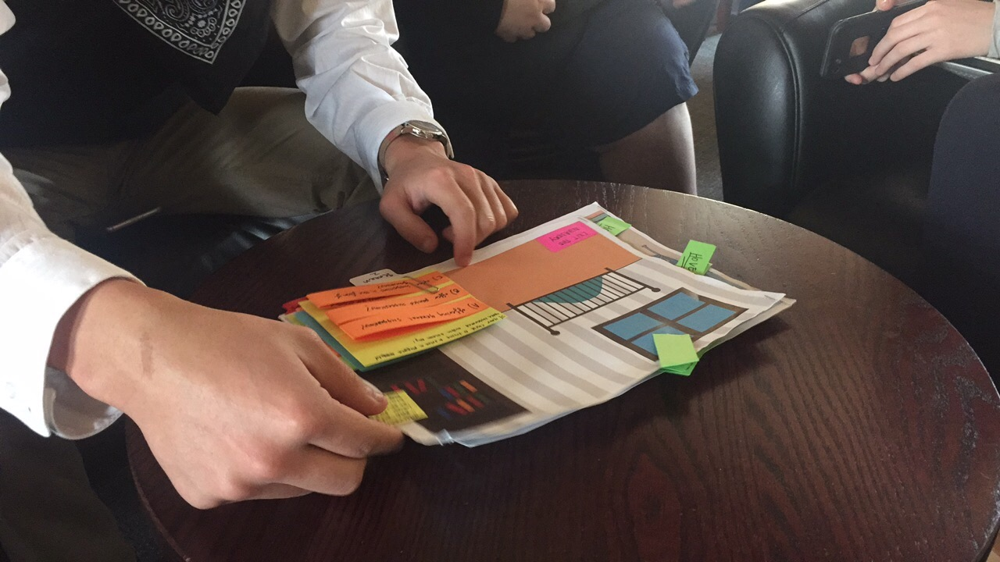
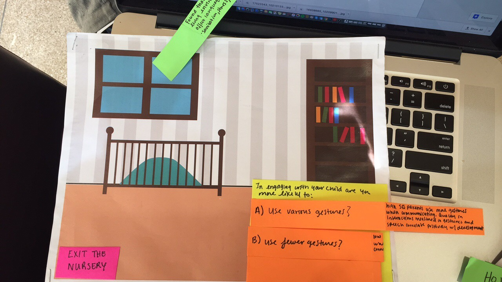
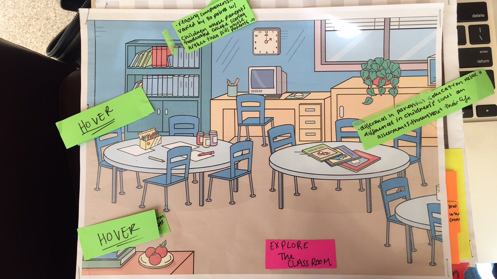

OBJECTIVE
Create a game that educates the user on how the word deficit between low income and high income children affects the educational success in children.
IDEATION
Tasked with creating a game that communicates the effects of a social issue over time, I gravitated towards the theme of education disparity within America. The 32 million word gap caught my attention because it represented how environmental factors related to socioeconomic class affected an individual and how they are perceived throughout their entire life.
Since this project dealt with early childhood development and early education, I created a color palette composed of primary colors. Coupled with screens designed to replicate binder paper and texture chosen to mimic stamps and chalk outlines, the entire project was designed to help the user feel like they were completing a preschool or kindergarten assignment.
ITERATION
Playtesting


Using folded paper, I was able to simulate the interaction I wanted to integrate into the project and was able to discover which actions I was asking my audience perform were intuitive or confusing.


My first playtest using a paper prototype revealed that I needed to reword my questions and find a better way of summarizing my argument’s conclusion.
FINAL
The final project incorporated the feedback I had received in my prototyping session.

The program introduced the topic in a quick video, then had the user to play a game where they gained points depending on the choices they made.

By reading the passage that corresponded to the number of points on the score chart, it was revealed whether or not they user believed external environmental factors could affect a child’s development.